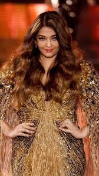
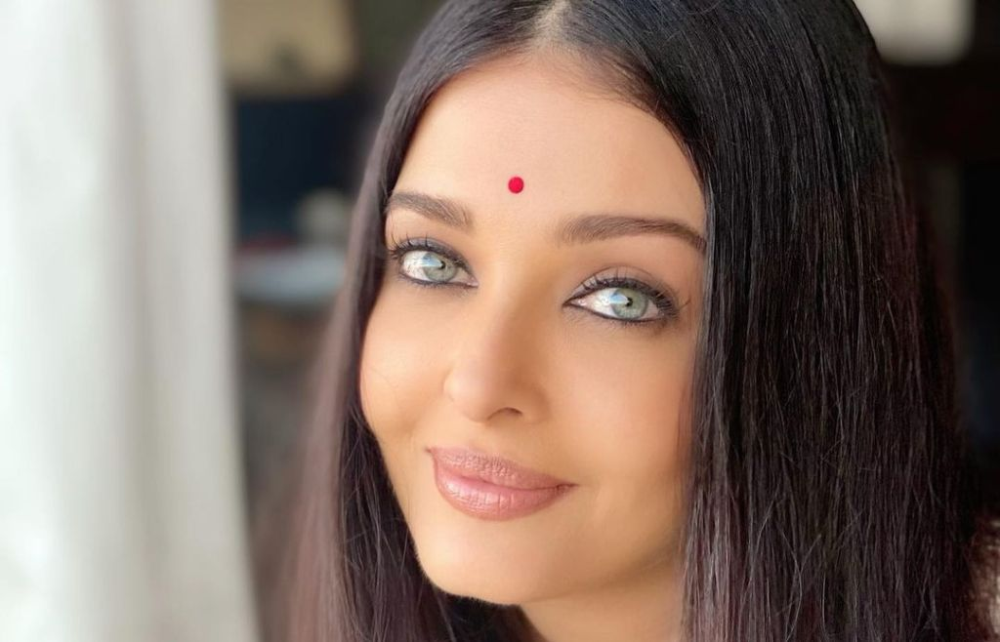
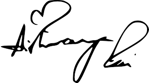

Aishwarya Rai
Born into a traditional south Indian family, Aishwarya started modeling at a young age. This green-blue-eyed beauty appeared in advertisements for many prestigious firms; the ones that brought her into the limelight were the garden sari and the Pepsi ad. Crowned Miss India 1994 runner-up, she was a hot favorite in the run for miss world title, which she won, her beauty and charm made her India's darling. Ash stormed into the Indian movie industry, where she has proven herself a brilliant & genuine actress.
family
On January 14, 2007, she announced her engagement to actor Abhishek Bachchan, the son of the famous actor Amitabh Bachchan, and married him on April 20 of that year. On November 16, 2011, Aishwarya Rai gave birth to a daughter at a clinic in Mumbai. The girl was named Aaradhia Bachchan.
Personal Images

Disclaimer
This figures are used by me.
Signature
